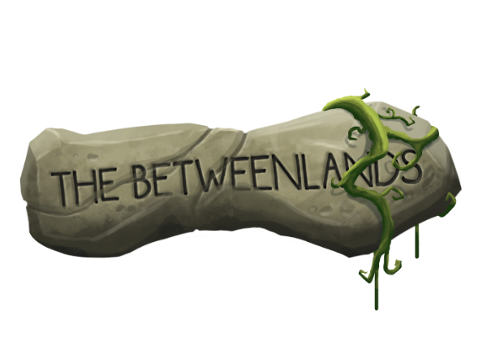

About Ethan (Crunk Crunk)
Ethan Chen is the founder of Chartings, a creative space for weird stream-of-consciousness stuff.
Other projects I have worked on:
Jerd Cave (pseudonym of Ethan Chen, powered by Diabolical Vasquez) was a simple fellow, before he got a burn scar and decided the only way to heal it was to blow himself up and regenerate. The plan almost worked exactly as intended, but unfortunately, Jerd regenerated around a metal pipe and it has since fused to his back forever. This caused Jerd to lose face, and ever since he's been trying to work his way back up the ranks of the WA"O" and earn some respect. Hasn't turned out well so far.